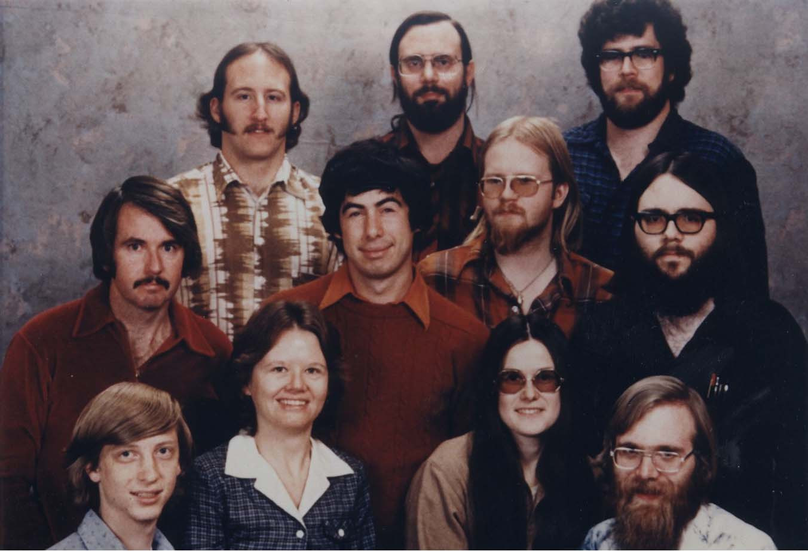
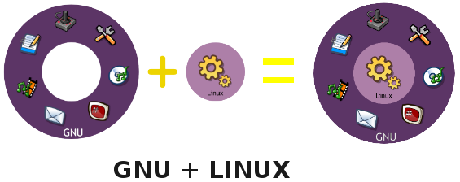
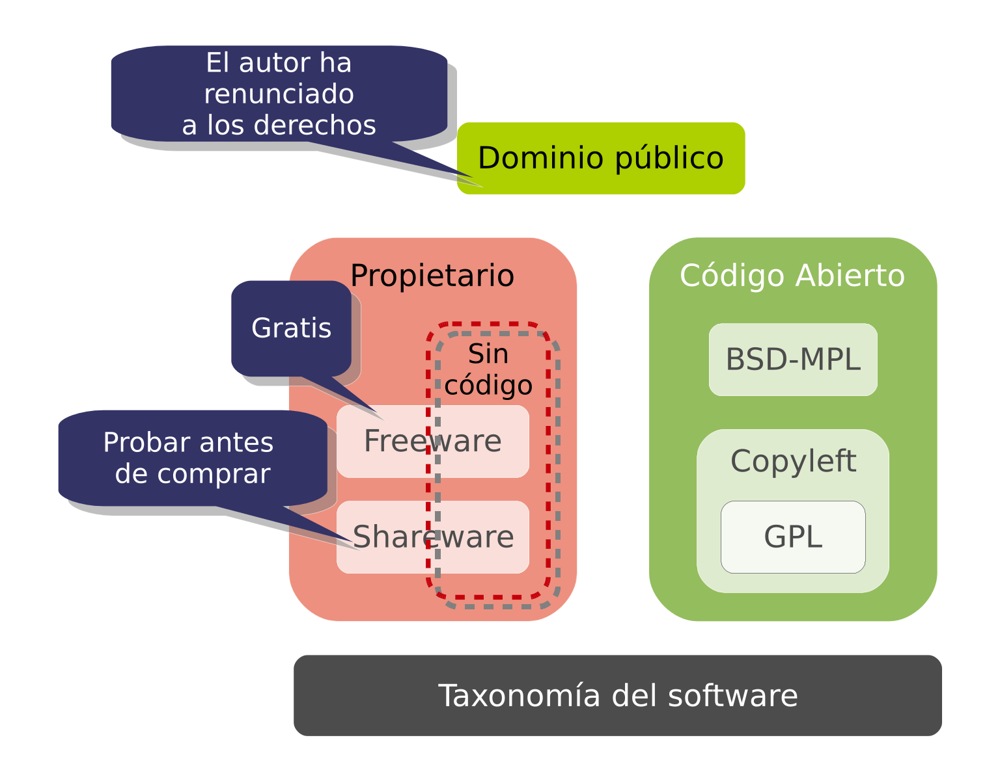
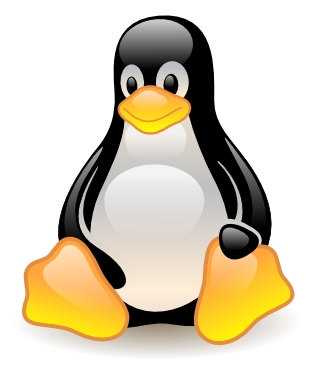
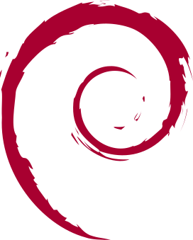
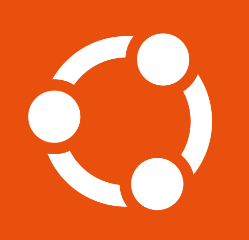
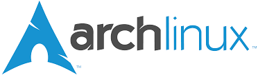
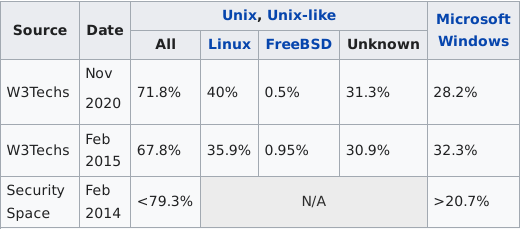
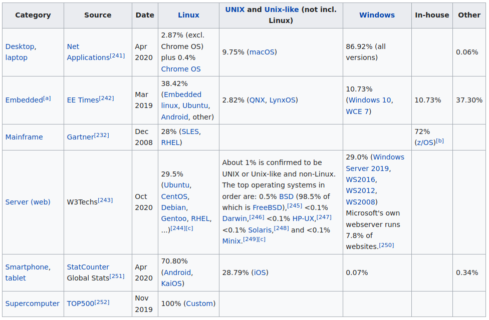

Tema 1: Introducción al software libre y GNU/Linux
Programación y Administración de Sistemas
(2022-2023)
Depto. Informática y Análisis Numérico
Escuela Politécnica Superior
Universidad de Córdoba
22 de febrero de 2023
1 Software libre
Historia
Los albores de la informática...
Años 60-70
- Pocas Computadoras:
- Grandes computadoras o mainframes
- Muy pocos y muy caros
- Se desarrolla software artesanal:
- El negocio estaba en el hardware
- Poca variedad de software \(\Rightarrow\) muy específico
- Se dispone del código fuente y los desarrolladores de software compartían libremente sus programas unos con otros
…la reacción… Años 80
Aparecen las computadoras más modernas y más baratas \(\Rightarrow\) necesidad de software.
El software privativo se hace fuerte (Vídeo: Piratas Silicon Valley):
- Impiden a los usuarios modificar el software
- En caso de encontrar un error \(\Rightarrow\) comunicar a la empresa desarrolladora de ese software
Fuente History of Microsoft
…la revolución…
Años 80: Emerge Richard Stallman
- 1984: comenzó a trabajar en el proyecto GNU.
- 1985: funda la Free Software Foundation (FSF). Se introdujeron los conceptos de:
- Free Software (as in speech)
- Copyleft
- Nace el movimiento social del software libre.

…el sistema se completa: GNU/Linux
Años 90: en 1991 Linus Torvalds crea el primer núcleo del sistema operativo GNU/Linux.

El software libre en la educación
Las 4 libertades
Libertad 0: usar el programa, con cualquier propósito.
Libertad 1: estudiar cómo funciona el programa, y adaptarlo a tus necesidades.
Libertad 2: distribuir copias, con lo que puedes ayudar a tu vecino.
Libertad 3: mejorar el programa y hacer públicas las mejoras a los demás, de modo que toda la comunidad se beneficie.
El copyleft
¿Y si alguien toma parte de mi software y lo utiliza de forma privativa?
copyleft: Restricción que se añade al software libre que impide que alguien distribuya copias o modificaciones restringiendo las 4 libertades

Tipos de software
Licencias libres (choosealicense.com)
Garantizar las libertades
Se utilizan licencias
Se apoyan en el sistema de copyrigth (que pretenden reemplazar)
Necesidad práctica no ideal
Con copyleft:
GPL/AGPL: GNU General Public License
MPL: Mozilla Public License
CC-sa: Creative Commons-Share Alike
Sin copyleft:
BSD: Berkeley Software Distribution
MIT: Massachusetts Institute of Technology
CC: Creative Commons
Tipos de software
¿Qué es software libre?
Según la Free Software Foundation se entiende por software libre aquél que concede cuatro libertades a sus usuarios:
Libertad 0: La libertad de usar el programa, con cualquier propósito. De modo que uno puede instalarlo en cuantas computadoras desee, sin pagar licencias, por tiempo ilimitado y para cualquier tipo de uso, incluyendo comerciales.
Libertad 1: La libertad de estudiar cómo funciona el programa, y adaptarlo a sus necesidades. Así pues uno puede traducirlo a su idioma, corregir algún fallo o añadir alguna funcionalidad. No se depende de los intereses del productor original, sino que puede hacerlo uno mismo o encargárselo a alguien que tenga los conocimientos para hacerlo. Requiere el acceso al código.
¿Qué es software libre?
Libertad 2: La libertad de distribuir copias, con lo que un profesor puede dar copias del software a sus alumnos, y éstos copiárselo a sus amigos. Las copias no tienen porqué ser gratuitas, sino que es lícito cobrar por ellas. Al difundir el programa estaremos ayudando no sólo a otras personas, sino también al autor: su programa llega a más gente, y esto hace que reciba más sugerencias para mejorarlo, y más gente dispuesta a ayudarle en el desarrollo.
Libertad 3: La libertad de mejorar el programa y hacer públicas las mejoras a los demás, de modo que toda la comunidad se beneficie. El acceso al código fuente también es un requisito para ello. Lo más habitual es enviar las mejoras a los autores originales para que las incorporen al programa. Así llegan a todos los usuarios y no hay que volver a hacer las modificaciones en futuras versiones.
¿Qué es software libre?
Estas cuatro libertades son las que definen el modelo del software libre, y todas sus demás características son consecuencia de ellas.
Para que un programa sea considerado software libre, debe facilitar todas y cada una de estas libertades.
El software que no es libre suele designarse con los términos “software privativo” o “software propietario”. Tanto el software libre como el privativo puede ser, o no ser, comercial.
¿Qué no es software libre? (I)
Software de dominio público: Se denomina software de dominio público a aquél que no tiene copyright (derechos de autor), porque el autor ha renunciado a ellos. En caso de que el código fuente del programa fuera también de dominio público, se trataría de un tipo de software libre. Sin embargo, la inmensa mayoría del software libre sí tiene derechos de autor, si bien los autores autorizan los usos descritos anteriormente.
Software semilibre: El software semilibre es aquel que proporciona las mismas libertades que el software libre, siempre y cuando sea usado sin ánimo de lucro. Un ejemplo es el sistema de cifrado PGP.
¿Qué no es software libre? (II)
Freeware o software gratuito: Existen muchos programas que se pueden descargar gratuitamente de Internet. Estos programas son gratuitos, pero no libres. Normalmente no dan acceso al “código fuente”, por lo que no pueden modificarse, traducirse, etc. Con frecuencia también se prohíbe vender una copia a alguien dispuesto a comprarla. Por otra parte, el software libre no tiene porqué ser gratuito y se puede cobrar la cantidad que estime oportuna por proporcionar una copia. Dos ejemplos de freeware son Microsoft Edge (anterior Internet Explorer) y Adobe Reader.
Shareware: programas que el autor permite utilizar, pero condicionando su uso. Por ejemplo, puede exigir que se pague por él si se emplea más allá de un determinado periodo de evaluación. A veces se distribuye una versión reducida de los programas y hay que pagar para poder disfrutar del programa en toda su capacidad. Normalmente tampoco se ofrece el código fuente. El compresor de ficheros WinRAR, o el programa de chat mIRC son shareware.
¿Qué no es software libre? (III)
- Software con fuentes: Con algunos programas se entrega el código fuente, para que el usuario pueda comprobar que no hace nada malicioso, pero eso no los hace libres, si su licencia no permite su modificación y redistribución sin condiciones excesivamente restrictivas. Las primeras versiones de Unix, bajo licencia de AT&T, incluían el código fuente, pero quedaba prohibida su redistribución a terceras partes. Además, a veces puede ser difícil asegurar que el código publicado corresponde al ejecutable.
2 GNU/Linux
Cronología de GNU/Linux
En agosto de 1991, el estudiante finlandés Linus Torvals, presenta en Internet la versión 0.01 del kernel de un nuevo SO, inspirado en MINIX (aunque sin código de MINIX).
Esta primera versión tenía poco más de 10.000 líneas de código.
En 1992, Linux se libera bajo licencia GPL. A través de Internet, muchos programadores se unieron al proyecto.
En 1994 Linux alcanzó la versión 1.0.
En 2003, llegamos a la versión 2.6, con casi 6 millones de líneas de código.
En 2008 nace Android basado en el kernel de Linux.
En 2022, versión 6.1: www.kernel.org
¿Qué es GNU/Linux?
Es un Sistema Operativo libre.
Surgió como reimplementación y reelaboración de UNIX.
Se acoge al estándar POSIX.
No es la única alternativa libre a UNIX (FreeBSD, OpenBSD, NetBSD...), pero si la más popular.
Creado y mantenido por una comunidad de desarrolladoras/es.
Código libre GPL\(\rightarrow\) Se puede conocer, modificar y extender.
Gratuito.

Si es gratis...
¿Quién piensas que desarrolla el Kernel de Linux?
Distribuciones de GNU/Linux
Distribución GNU/Linux: Colección de software que forma un S.O. basado en el kernel Linux. Normalmente incluye:
- El kernel Linux + las aplicaciones GNU,
- software de terceros, libre o propietario: escritorio,servidores, utilidades,...
Las distribuciones difieren en el empaquetado de los programas (
rpm,deb,tgz), el programa de instalación y las herramientas específicas:Lista de distribuciones en Wikipedia: http://en.wikipedia.org/wiki/List_of_Linux_distributions
Información interesante en http://www.distrowatch.com
Algunas de las más populares son Debian, Red Hat (Fedora), Arch, SuSE, Gentoo, Ubuntu, Guadalinex, Alpinelinux…
Distribuciones de GNU/Linux: Debian
Distribución totalmente libre, sin fines comerciales.
Tres ramas en la distribución:
Stable: destinada a entornos de producción. Soporte 3 + 2 años LTS, versión actual 11.0 bullseye (curiosidad).Testing: software más nuevo, en fase de prueba (actualmente bookworm).Unstable: en fase de desarrollo (siempre sid).
Algunas características:
Gran número de aplicaciones disponibles.
Potente formato de empaquetado: paquetes
deby herramientaapt.Pionera en instalación y cambio de versiones a través de red.
Distribuciones de GNU/Linux: Ubuntu
Enfocada a ordenadores de escritorio (Desktop/laptop Computers), aunque existe la versión para servidores. Filosofía Ubuntu.
Basada en Debian, Ubuntu concentra su objetivo en la usabilidad, lanzamientos regulares y facilidad en la instalación.
Patrocinado por Canonical Ltd., una empresa privada fundada y financiada por el empresario sudafricano Mark Shuttleworth.
LTS (Long Term Support): soporte a largo plazo, Long Time Support (5 años).
no-LTS: soporte <9 meses.
Proyectos: kubuntu, edubuntu, xubuntu, lubuntu, mint…
Distribuciones de GNU/Linux: Red Hat
Gran firma comercial del mundo GNU/Linux (1994).
Introduce el formato de empaquetado
rpm(RedHat Package Manager).Desde 2002, orientado en exclusiva al mercado corporativo, solamente a suscriptores de pago (RHEL):
- Cede la última distribución personal (RH 9) a la comunidad \(\Rightarrow\) aparecen los proyectos Fedora/CentOS.
Distribuciones libres que clonan RHEL: CentOS, Scientific Linux, ClearOS, etc.
Distribuciones de GNU/Linux: CentOS

Objetivo: ofrecer al usuario un software de “clase empresarial” gratuito.
Robusto, estable y fácil de instalar y utilizar.
Mantiene el sistema de paquetes RPM, gestionado a través de
yum.Última versión: CentOS 8.
Recomendado para servidores.
Distribuciones de GNU/Linux: Arch
Arch Linux no posee herramientas de configuración automática, requiriendo un grado de conocimiento superior al básico.
No obstante, una vez instalado, se puede mantener y administrar el sistema de forma sencilla.
Su filosofía huye del uso de interfaces gráficas.
Como herramienta para administrarlo, Arch Linux se apoya en su gestor de paquetes, llamado
pacman.- Existen varias distribuciones que se apoyan en Arch Linux, siendo Manjaro quizás la más popular (https://manjaro.org/).
3 Software libre en la administración de sistemas
Ventajas del SL
Libertad de uso, estudio, redistribución y modificación:
podemos instalarlo en tantas máquinas como queramos.
podemos adaptarlo a nuestras necesidades o las del cliente.
podemos revisar el código y corregir errores sin esperar a que lo haga el desarrollador.
corrección mas rápida y eficiente de fallos, y rápida resolución de dudas y problemas, gracias al modelo bazar y a las fuertes comunidades que tiene detrás.
Independencia tecnológica: no nos atamos a ningún proveedor en particular.
Ausencia de secretismo tecnológico y de patentes (seguridad jurídica).
Fiabilidad y rendimiento.
Ventajas del SL
Formatos estándar: facilitan la interoperabilidad.
Métodos simples y unificados de gestión de software (p.ej
apt): las distribuciones evitan tener que acudir a buscar software de fuentes dudosas.Inmensa variedad de soluciones muy maduras: el software libre es popular en entornos de servidores.
Demanda de técnicos FLOSS en expansión, gracias a la creciente adopción por parte de las AAPP y de grandes empresas tecnológicas (Google, IBM, Sun/Oracle, etc.).
Sistemas potencialmente más seguros: hackers y empresas de seguridad de todo el mundo puedan auditar los programas.
Aspectos económicos: más de mil millones de euros en licencias de Microsoft en España anuales (2006).
Uso de SL en administración de sistemas
El mercado suele medirse por unidades vendidas o por beneficios.
Difícil de de evaluar para el caso del FLOSS: sistemas libres son a menudo obtenidos sin coste e instalados sin contratar soporte.
Muchas veces se instalan en máquinas que no fueron compradas con software libre precargado.
El método que se usa suele ser mediante acceso a máquinas públicamente accesibles (como servidores web).
Problema: este método no contempla las máquinas no accesibles públicamente.
Uso de software libre en administración de sistemas
Software libre en servidores web.

Fuente: http://en.wikipedia.org/wiki/Usage_share_of_operating_systems
Software libre en la administración pública. http://es.wikipedia.org/wiki/Software_libre_en_la_Administraci%C3%B3n_P%C3%BAblica
Uso de software libre en equipos informáticos
 Fuente: http://en.wikipedia.org/wiki/Usage_share_of_operating_systems
Desventajas del software libre
Necesidad de una formación especializada: la gente se suele (o solía) formar con SO privativos.
Algunas herramientas incorporan interfaces visuales con más funcionalidad privativas.
No siempre hay soporte para todo tipo de hardware (patentes, drivers y especificaciones privativas).
¿Mayor mercado laboral en sistemas privativos? (en otros sectores, no en administración de sistemas).
Interfaces gráficas de usuario
Muchas distribuciones traen GUIs o herramientas visuales propias.
Son útiles y facilitan las tareas, sobre todo para sysadmins noveles.
Suelen ser propietarias.
O nos hacen dependientes de una distribución en concreto.
A veces poseen oscuros detalles en la forma de gestionar los recursos.
Vamos a estudiar siempre la tecnología y métodos subyacentes, incluyendo ficheros de configuración, comandos, etc…
Estos suelen ser comunes a todas las distribuciones, incluso a todos los sistemas Unix.
La configuración manual es mejor: más rápida, más flexible, más fiable, más potente y más scriptable.
Inciso: ¿cómo promover el software libre?
La gratuidad no es el punto fuerte del software libre.
Insistir en la gratuidad supone minusvalorar el resto de ventajas (y es injusto para la gente que lo crea y lo mantiene).
No se debe comenzar hablando de dinero a los que toman las decisiones.
No hablar del FLOSS en abstracto (“Linux es mejor”): mejor estudiar costes de migración y tratar de cubrir necesidades concretas que no están cubiertas o mejorar lo que hay.
No hay que ser impaciente: dejar que el software libre crezca con los clientes, introduciendo mejoras de forma progresiva.
4 Herramientas básicas
El superusuario o administrador
El administrador o superusuario es el usuario que tiene siempre todos los privilegios sobre cualquier fichero, instrucción u orden del sistema.
En GNU/Linux ese usuario es root, que pertenece al grupo root:
Directorio HOME:
/root(o/en modo monousuario).Si estamos en el sistema utilizando cualquier otro usuario ¿cómo podemos convertirnos en administrador?
Salir de la sesión y entrar utilizando root como nombre de usuario (deshabilitado por defecto en algunos entornos).
Utilizar el comando
su\(\rightarrow\) nos pedirá la contraseña de root y abrirá unashelldonde tendremos privilegios de administración.
El superusuario o administrador
pas@debianpas:~$ whoami
pas
pas@debianpas:~$ su
Contraseña:
root@debianpas:/home/debianpas# whoami
root
La herramienta sudo
sudopermite a otros usuarios ejecutar órdenes como si fuesen el administrador./etc/sudoers\(\Rightarrow\) fichero de configuraciónFichero de solo lectura, incluso para
root.En él estableceremos “quién puede ejecutar qué y cómo” desde
sudo.En la mayoría de distribuciones basta con que el usuario pertenezca al grupo
sudo.
La herramienta sudo
visudo\(\Rightarrow\) orden para modificar el fichero de configuración/etc/sudoers.
# Especificación de privilegios de usuario
root ALL=(ALL:ALL) ALL
# Los miembros del grupo sudo podrán ejecutar cualquier comando
%sudo ALL=(ALL:ALL) ALLsudo orden\(\Rightarrow\) pide contraseña del usuario.
Comunicación con el resto de usuarios
El administrador debe comunicarse con el resto de usuarios (algunos en desuso):
write: enviar un mensaje a un usuariotalk: conversar con un usuario, incluso aunque esté en otra máquina GNU/Linux.mesg [y/n]: habilitar/deshabilitar la llegada de mensajes al terminal.wall: mandar un mensaje a todos los usuarios del sistema.Fichero
/etc/motd: contiene el mensaje del día que se imprime justo después de entrar al sistema (en modo texto).- Fichero
$HOME/.hushlogin\(\Rightarrow\) permite evitar el mensaje del día.
- Fichero
Fichero
/etc/issue: contiene el mensaje que se muestra antes del login, normalmente muestra la versión de Linux (en modo texto).
Referencias
Evi Nemeth, Garth Snyder, Trent R. Hein, Ben Whaley y Dan Mackin. Unix and Linux system administration handbook. Capítulo 1. Where to Start. Addison-Wesley. 5th Edition. 2018.
Aeleen Frisch. Essential system administration. Capítulo 1. Introduction to System Administration. O’Reilly and Associates. Tercera edición. 2002.
Miguel Vidal y José Castro El software libre y la administración de sistemas
5 Proyecto asignatura
Ejercicios
- Web Debian: netinstall vs imagen. Opcionalmente Ubuntu será equivalente para casi todo.
- Crear VM + disco + conectar .iso
- 1-2GB RM + 4GB de disco es suficiente para trabajar sin entorno gráfico
- Vamos a instalar sin entorno gráfico
- En el particionado utilizaremos el por defecto de momento.
- Nos piden cosas básicas: ssh, entorno gráfico…
Ya tenemos nuestra máquina lista:
- Cambiar contraseña por defecto (en imágenes de VPS/nubes)
- Terminamos: no hay ni sudo, vim, etc.
- Como
root:- Instalar sudo:
apt install sudo
- Eliminar el CD/ISO de las fuentes de software:
nano /etc/apt/sources.list
- Añadir usuario sudo:
adduser adminpassudo usermod -aG sudo adminpas
- ¡Ya hemos terminado con
root!
- Instalar sudo:
- Con el usuario
adminpasprobamos algún comando, por ejemplo:sudo cat /etc/shadow - ¿Qué hace
sudo !!? - Explorar la máquina:
- Disco libre, particiones y memoria:
df,fdisk -l,free(quizás necesitessudopara alguno) - Procesadores y núcleos:
cat /proc/cpuinfo - Herramienta apt y repositorios: APT: el comando básico que debes conocer para usar Linux
- Disco libre, particiones y memoria:
- ¿Cómo apagar o reiniciar desde el terminal de Linux?
Programación y Administración de Sistemas (2022-2023)